IQUIQUE · CHILE · DESDE 2009
CLUB MÁSTER
TIERRA DE CAMPEONES
Una familia deportiva que demuestra, en cada pista y en cada viaje, que la pasión por el atletismo no tiene edad.
NUESTRA HISTORIA
una noche, veintidós voluntades y un sueño que todavía sigue corriendo.
El 10 de diciembre de 2009, veintidós personas se reunieron en la casa de Marta Campos con una idea que parecía sencilla, pero que estaba cargada de futuro: crear un club donde la edad nunca fuera una excusa para dejar de entrenar, competir y representar a Iquique.
No había grandes recursos, oficinas ni una estructura consolidada. Había amistad, experiencia, voluntad y el deseo de seguir sintiendo la emoción de una pista, un salto, un lanzamiento o una posta compartida.
Así nació el Club Máster Tierra de Campeones. Y nació pensando en grande. Casi de inmediato, sus integrantes solicitaron organizar un Campeonato Zonal Norte. Para una institución recién creada, el desafío parecía enorme, pero ahí apareció el sello que acompañaría al club durante toda su historia: cuando parecía difícil, el equipo se unía todavía más.
El esfuerzo de aquellos primeros años llevó a Iquique a recibir cientos de atletas. Hubo que organizar pruebas, recibir delegaciones, resolver imprevistos y trabajar durante largas jornadas. Cada dificultad superada fue construyendo prestigio y abriendo la puerta a competencias de mayor alcance.
La historia continuó en buses, aeropuertos, hoteles, pistas mojadas, jornadas bajo el sol y regresos llenos de medallas. Pero también se escribió en los entrenamientos silenciosos, en quien esperaba a un compañero después de la meta y en quienes trabajaban fuera de la pista para que todo resultara.
Con los años llegaron títulos zonales, actuaciones nacionales, viajes internacionales y nuevas generaciones. Sin embargo, lo más importante se mantuvo intacto: el sentimiento de familia y el orgullo de vestir los colores de Iquique.
“Tierra de Campeones no es solo nuestro nombre. Es la promesa de seguir dejando huella, sin importar la edad.”
La fundación
Veintidós personas dan vida al club en Iquique.
El primer gran salto
El club asume desafíos zonales y nacionales.
Una gran convocatoria
Más de 330 atletas llegan a Iquique para un zonal máster.
Una era de grandes logros
Títulos, medallas y presencia internacional consolidan su historia.
NUESTROS ATLETAS
Distintas pruebas, una misma camiseta
Velocidad y vallas
Pruebas explosivas donde cada centésima resume meses de preparación.
Medio fondo y fondo
Resistencia, estrategia y constancia vuelta tras vuelta.
Saltos
Potencia, técnica y decisión en largo, triple, alto y garrocha.
Lanzamientos
Fuerza y precisión en bala, disco, martillo y jabalina.
Marcha y combinadas
Disciplina técnica y versatilidad en pruebas exigentes.
Postas
El momento donde el esfuerzo individual se convierte en trabajo de equipo.
LOGROS DESTACADOS
Resultados que llevan el nombre de Iquique
Medallas en 2021
61 de oro, 41 de plata y 9 de bronce.
Medallas en 2022
40 de oro, 35 de plata y 15 de bronce.
Tricampeonato 2023
Campeones de la Zona Norte en Copiapó.
Campeones iberoamericanos
Posta chilena C-40 con 46,95 segundos.
GALERÍA DEL CLUB
Competencias, podios y momentos que nos unen
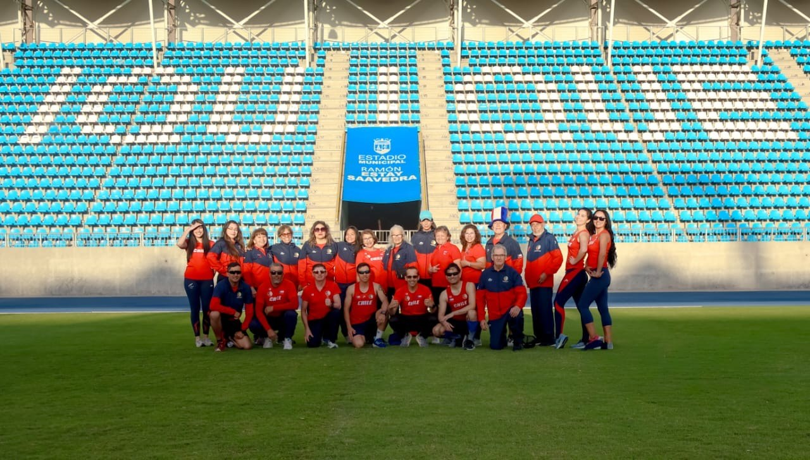
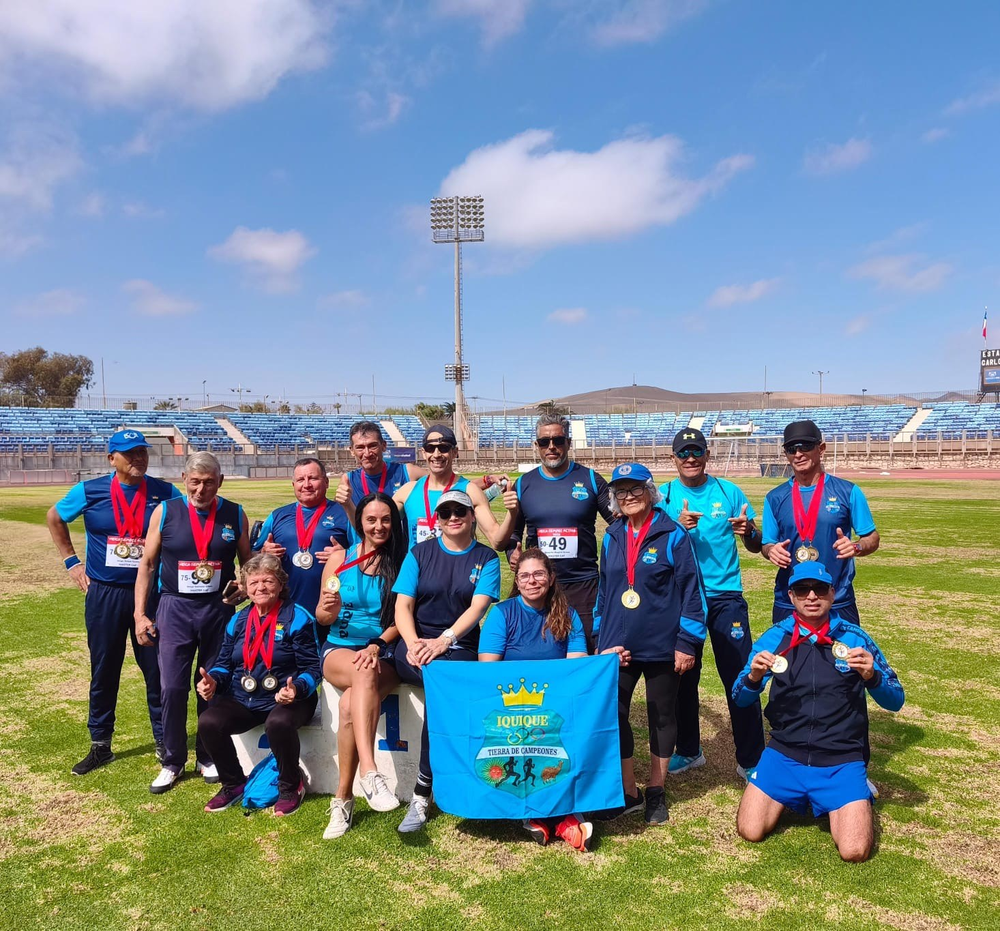
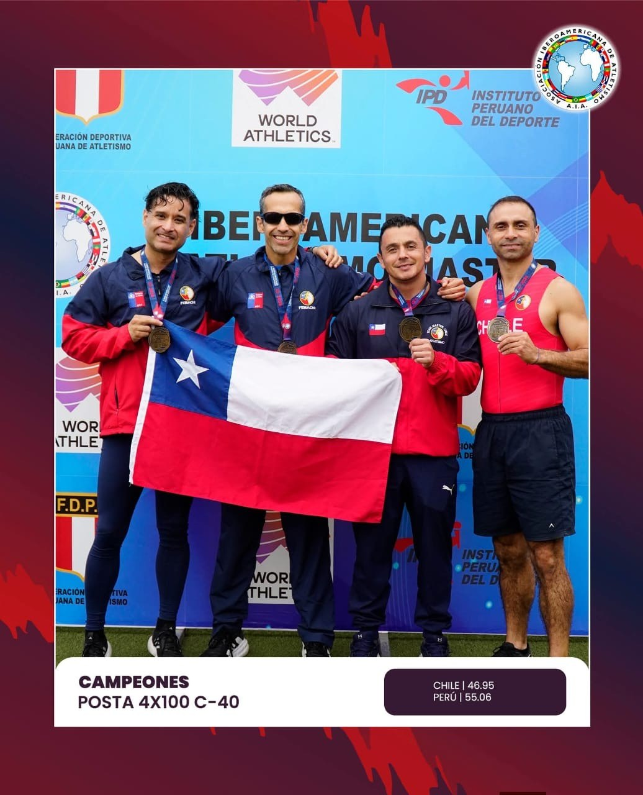
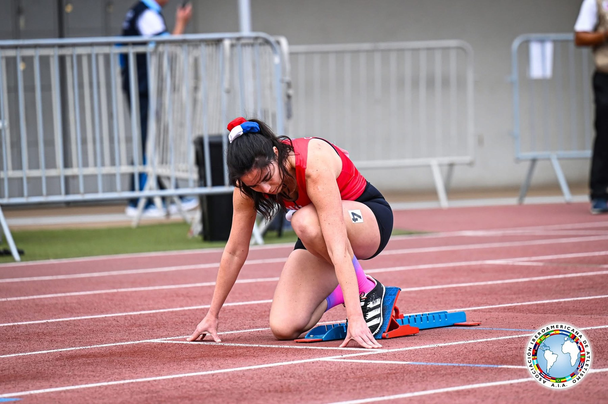
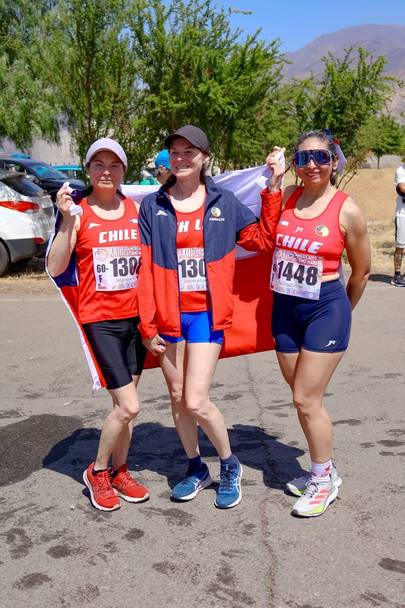
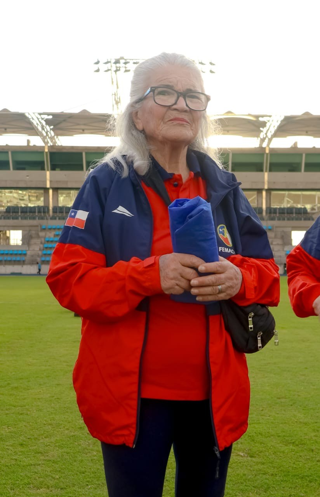
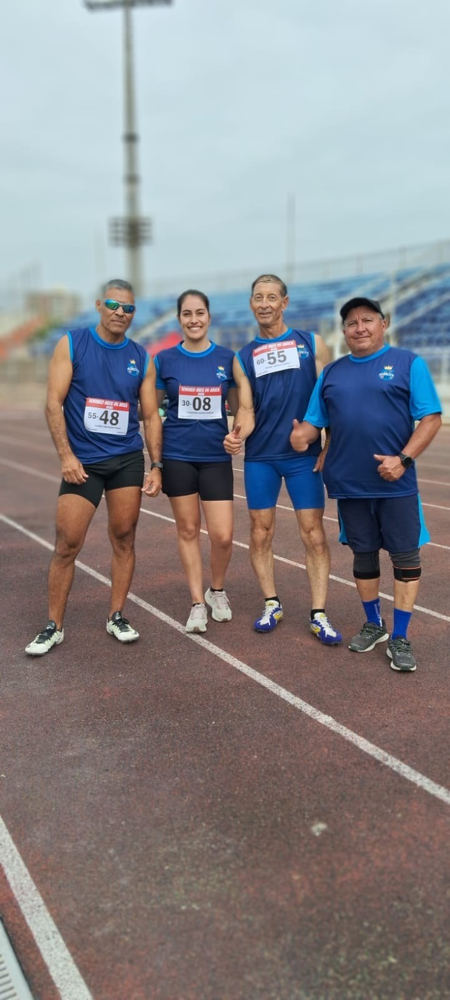
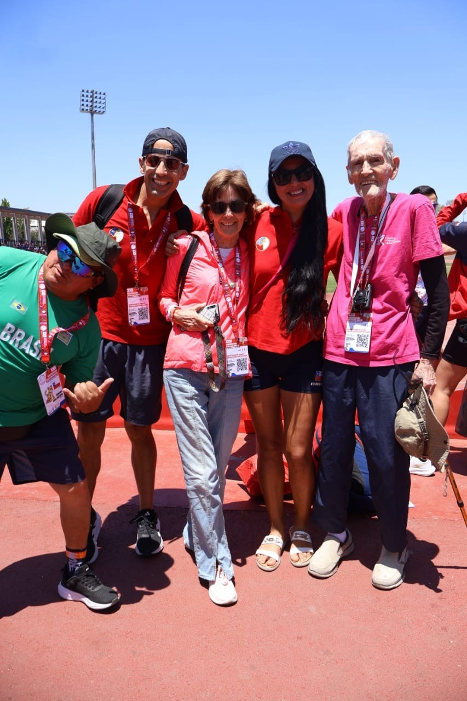
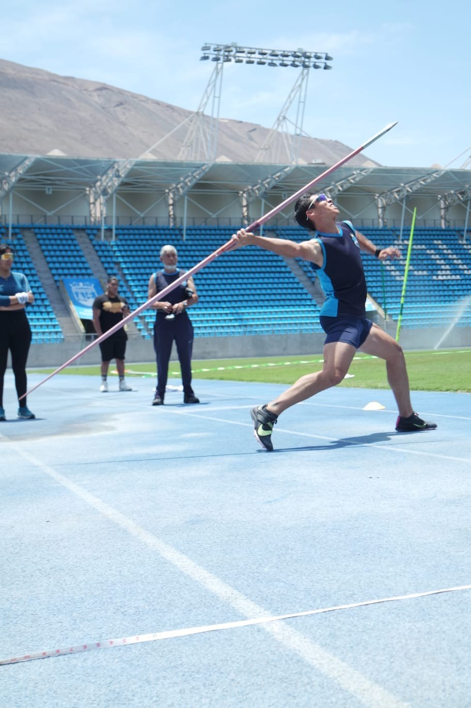
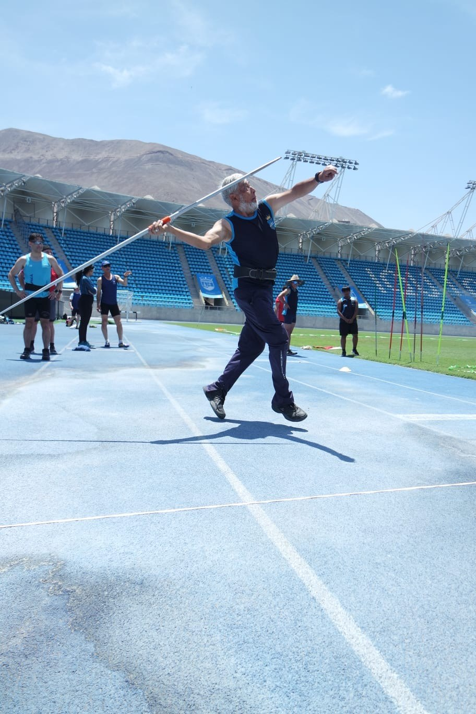
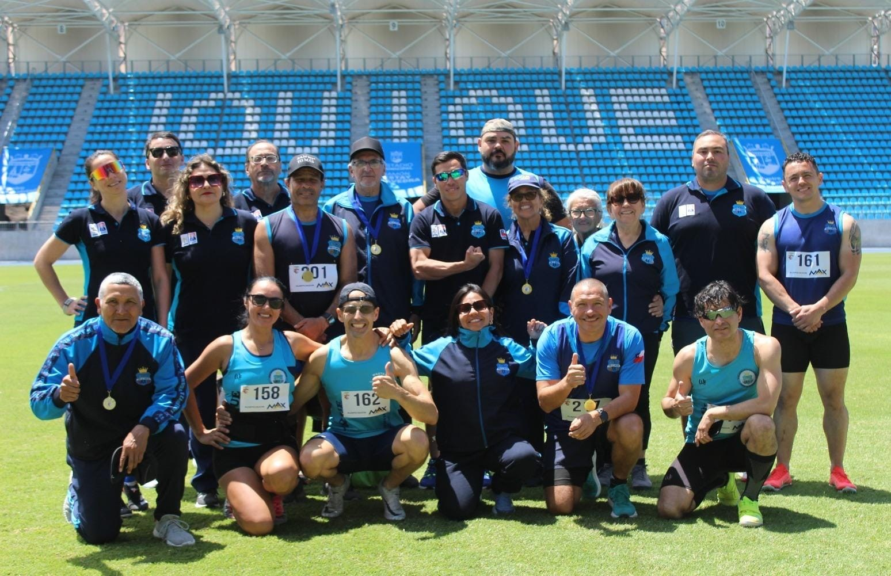
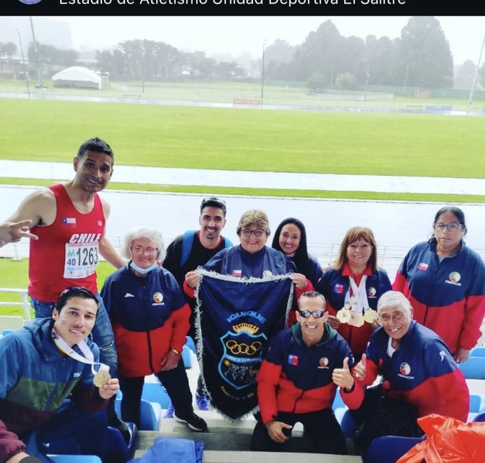
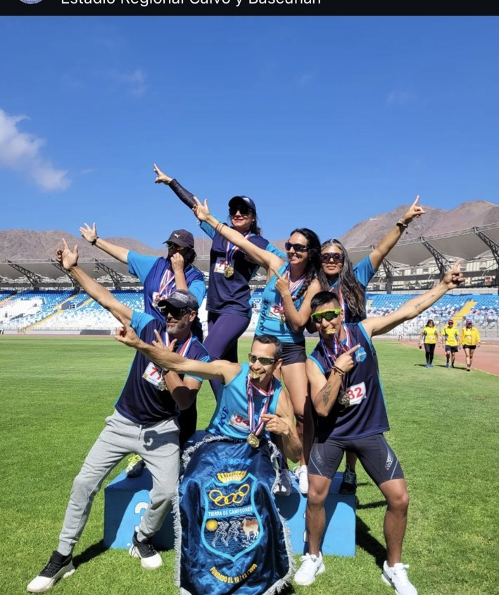
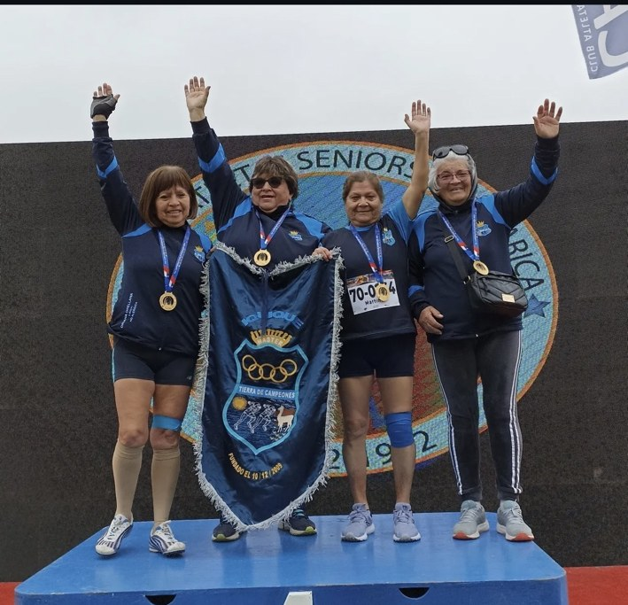
ACTUALIDAD
La historia continúa
Zonal Norte en Iquique
El club vuelve a asumir el desafío de recibir al atletismo máster del norte del país.
Quinto título consecutivo
El trabajo colectivo reafirma el liderazgo deportivo del club en la Zona Norte.
Iberoamericano y Sudamericano
Atletas del club representan a Chile y a Iquique en competencias internacionales.
SÉ PARTE DE LA HISTORIA
Tu próxima meta puede comenzar aquí
Entrena, compite y comparte con una comunidad que lleva el nombre de Iquique por Chile y el extranjero.
Instagram
@master.tdc
Correo
clubmastertdecampeones@gmail.com
Lugar
Estadio Tierra de Campeones, Iquique